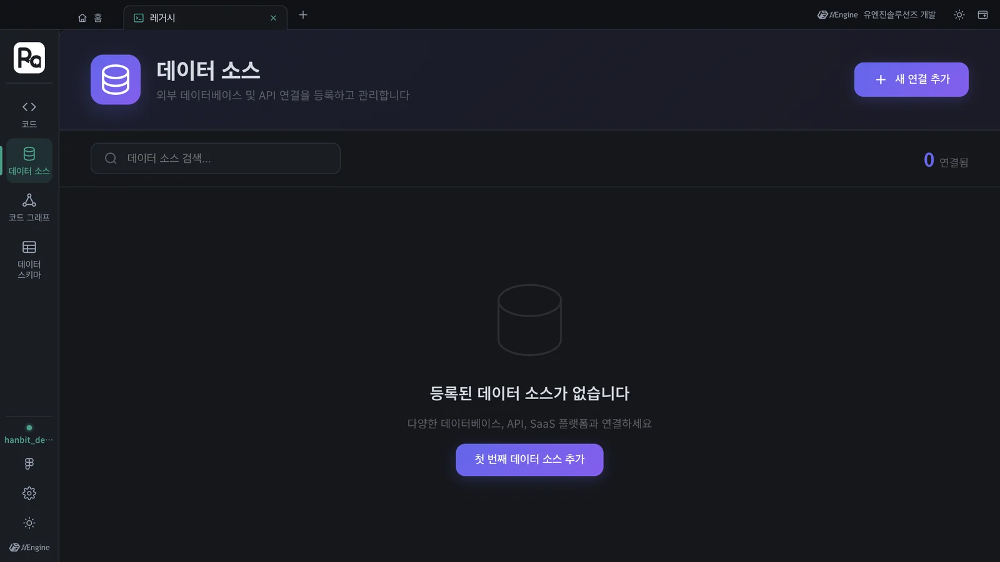
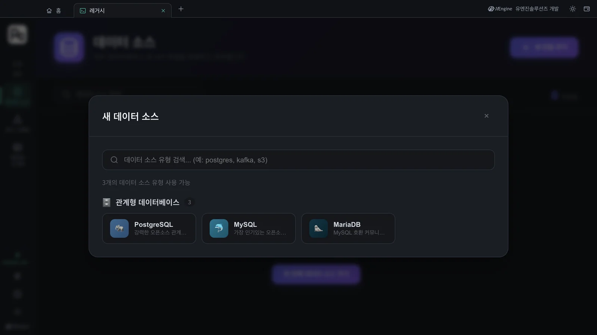
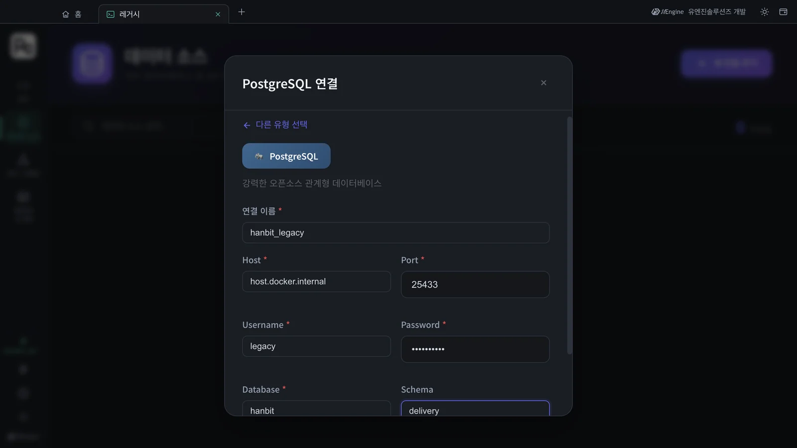
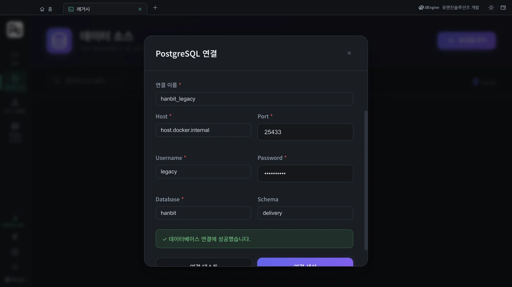
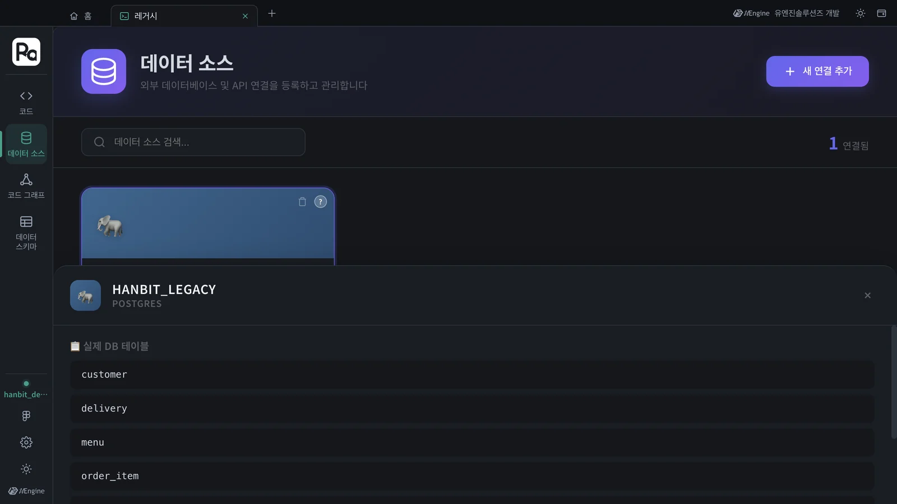
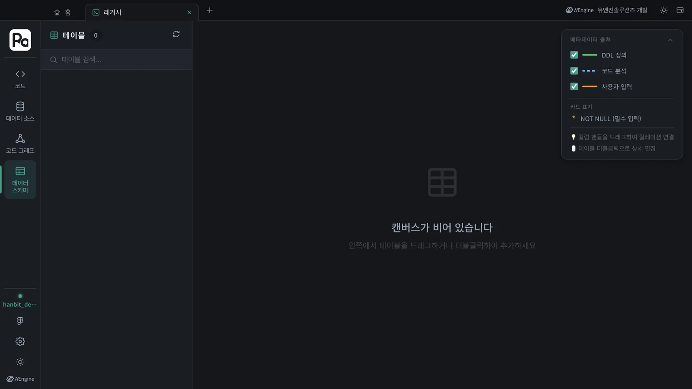

한빛 딜리버리가 지금 쓰는 옛 주문 DB(PostgreSQL)를 레거시 탭의 데이터 소스에 등록합니다. 연결을 시험하고 만들면 그 DB의 실제 테이블이 바로 보이고, 이 연결이 레거시 분석과 데이터 스키마의 원천이 됩니다.
왜 데이터 소스인가#
새 시스템은 빈 땅에 서지 않습니다. 한빛 딜리버리에는 이미 가게 · 메뉴 · 주문 · 배달을 담은 옛 DB가 있고, 새 설계는 그 DB와 맞물려야 합니다. 어떤 테이블이 있는지, 주문 상태가 어떤 값으로 저장되는지를 모르고 설계하면 옮길 때 막힙니다.
Robo Architect Lite에는 데이터 패브릭(Ontological의 fabric · catalog 컨테이너)이 함께 들어 있습니다. 여기에 회사의 DB를 데이터 소스로 한 번 등록해 두면, 그 DB를 직접 열지 않고도 앱 안에서 테이블을 보고, 레거시 분석(13장)이 그 구조를 읽어 갑니다.
| 레거시 탭의 레일 | 하는 일 |
|---|---|
| 코드 | 옛 시스템의 소스 코드 · DDL 폴더를 보고 분석을 시작한다(13장) |
| 데이터 소스 | DB 연결을 등록 · 시험하고, 실제 테이블을 본다 (이 장) |
| 코드 그래프 | 분석한 코드의 호출 · 참조 관계 |
| 데이터 스키마 | 테이블과 컬럼, 관계를 캔버스로. DDL 정의 · 코드 분석 · 사용자 입력에서 채워진다 |
따라 하기 1 — 실습용 옛 DB 띄우기#
실습에는 한빛 딜리버리의 옛 주문 DB를 흉내 낸 작은 PostgreSQL을 씁니다. 테이블 일곱 개(store 가게 · menu 메뉴 · customer 고객 · orders 주문 · order_item 주문 항목 · rider 라이더 · delivery 배달)와 예제 데이터가 들어 있습니다.
- legacy-delivery.sql을 내려받습니다.
- 터미널에서 PostgreSQL 컨테이너를 띄웁니다(Docker Desktop은 1장에서 이미 깔았습니다).
docker run -d --name ra-tut-legacy-pg \ -e POSTGRES_USER=legacy -e POSTGRES_PASSWORD=legacy1234 -e POSTGRES_DB=hanbit \ -p 127.0.0.1:25433:5432 postgres:16-alpine - 몇 초 뒤, 내려받은 파일이 있는 폴더에서 스키마와 데이터를 넣습니다.
docker exec -i ra-tut-legacy-pg psql -U legacy -d hanbit < legacy-delivery.sql docker exec ra-tut-legacy-pg psql -U legacy -d hanbit -c '\dt delivery.*' - 마지막 명령이
delivery스키마의 테이블 7개(customer…store)를 보여 주면 준비가 끝났습니다.
포트 25433
PC에 이미 PostgreSQL이 5432 포트로 떠 있을 수 있어 실습 DB는 25433으로 엽니다. 127.0.0.1: 을 붙였으므로 이 PC 밖에서는 접속할 수 없습니다.
따라 하기 2 — 데이터 소스 등록#
- 홈에서 레거시 · 데이터 소스 카드를 엽니다. 레거시 탭의 레일에는 레거시 기능의 메뉴 — 코드 · 데이터 소스 · 코드 그래프 · 데이터 스키마 — 만 있습니다.
- 데이터 소스를 누릅니다. 처음에는 「등록된 데이터 소스가 없습니다」가 나옵니다.

- 새 연결 추가를 누르면 「새 데이터 소스」 창에 쓸 수 있는 유형이 나옵니다. 지금은 관계형 데이터베이스 세 가지(PostgreSQL · MySQL · MariaDB)입니다. PostgreSQL을 고릅니다.

- 「PostgreSQL 연결」 창에 다음을 넣습니다.
| 칸 | 값 | 설명 |
|---|---|---|
| 연결 이름 | hanbit_legacy |
앱 안에서 부를 이름 |
| Host | host.docker.internal |
데이터 패브릭이 컨테이너 안에서 돌기 때문에, 내 PC를 가리킬 때 localhost 대신 이 이름을 씁니다 |
| Port | 25433 |
따라 하기 1에서 연 포트 |
| Username / Password | legacy / legacy1234 |
|
| Database | hanbit |
|
| Schema | delivery |
비우면 public 을 가져옵니다 |

- 연결 테스트를 누릅니다. 「✓ 데이터베이스 연결에 성공했습니다.」가 나오면 연결 생성을 누릅니다.

Host 에 localhost 를 쓰면
연결 테스트가 실패합니다. 컨테이너 안의 localhost 는 데이터 패브릭 컨테이너 자기 자신이기 때문입니다. 회사 DB처럼 다른 서버에 있는 DB라면 그 서버의 주소를 그대로 씁니다.
따라 하기 3 — 실제 테이블 보기#
- 목록에
hanbit_legacy카드(POSTGRES,host.docker.internal·hanbit)가 생기고, 오른쪽 위 숫자가 1 연결됨이 됩니다. - 카드를 누르면 아래에 실제 DB 테이블 패널이 열리고,
delivery스키마의 테이블이 나옵니다.

이 튜토리얼에서 나온 테이블은 customer · delivery · menu · order_item · orders · rider · store 일곱 개로, 따라 하기 1에서 넣은 것과 같습니다. 앱이 DB에 직접 붙어 목록을 읽어 온 것입니다.
데이터 스키마는 언제 채워지나#
레일의 데이터 스키마를 눌러 보면 아직 「테이블 0」, 「캔버스가 비어 있습니다」입니다. 오른쪽의 메타데이터 출처 범례(DDL 정의 · 코드 분석 · 사용자 입력)가 말하듯, 이 캔버스는 옛 시스템의 DDL과 코드를 분석한 결과로 채워집니다. 분석은 13장 「레거시 코드 분석」에서 합니다.

옛 DB와 새 설계를 나란히
5장의 Plan에서 Order 애그리거트는 PLACED → ACCEPTED / CANCELLED 로 상태를 다룹니다. 옛 orders.status 에는 DELIVERED · DELIVERING · COOKING · REJECTED 같은 값이 들어 있습니다. 옮길 때 이 값을 어떻게 대응시킬지가 다음 프로포절의 좋은 주제입니다.
확인할 것#
- 데이터 소스 목록에
hanbit_legacy가 있고 「1 연결됨」이다. - 카드를 눌렀을 때 실제 DB 테이블 7개가 보인다.
확인 문제#
- Host 칸에
localhost가 아니라host.docker.internal을 쓰는 이유는 무엇인가요? - 「연결 테스트」와 「연결 생성」은 무엇이 다른가요?
- 데이터 소스를 등록했는데 데이터 스키마가 비어 있습니다. 고장인가요?
정답
- DB에 접속하는 쪽이 컨테이너 안의 데이터 패브릭이기 때문입니다. 컨테이너 안에서
localhost는 그 컨테이너 자신이고, 내 PC는host.docker.internal입니다. - 연결 테스트는 입력한 값으로 접속만 해 보고, 연결 생성은 그 연결을 데이터 소스로 등록합니다.
- 아닙니다. 데이터 스키마는 DDL · 코드 분석(13장)이나 사용자 입력으로 채워집니다. 등록만으로는 실제 DB 테이블 패널에 목록이 보입니다.